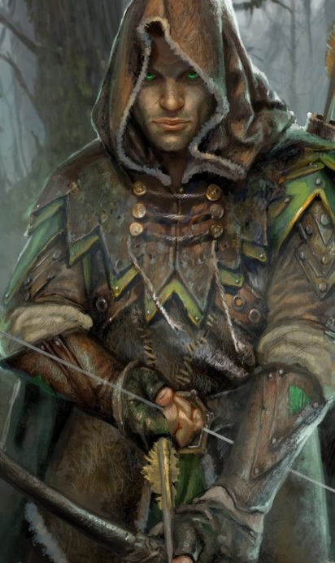

Büyü sanatları hakkında yeterli düzeyde bilgi sahibi olan kendilerini ormanın ruhunu ve içinde barındırdığı hayvanları korumaya adamış savaşçılardır. Ormanlık alanlarda etkili saldırılara sahip düşmanlarına korku salan bir sınıftır.
Seviye 1
Balta: Balta kullanabilme yeteneğidir.Hançer: Hançer kullanabilme yeteneğidir.
Mızrak: Mızrak kullanabilme yeteneğidir.
Kılıç: Kılıç kullanabilme yeteneğidir.
Kırbaç: Kırbaç kullanabilme yeteneğidir.
Anımsa: Ait olduğunun dinin tapınağına dönüş komutudur. Seviye 10a kadar geçerlidir. (anımsa)
Parşömen: Parşömen okuma yeteneğidir.(oku yazdıktan sonra okunacak parşömenin adı yazılır.)
Tılsımlar: Büyü kullanabilme ile ilgili bir yetenektir.(otomatik)
Seviye 3
Karşılama: Kurbanın saldırısını silahla karşılamak için kullanılan yetenek. (otomatik)Seviye 4
Kamuflaj: Ormanlık alanda gizlenme yeteneği.Seviye 5
Toz atma: Yerdeki tozu-kumu seri bir ayak darbesiyle havalandırarak rakibin gözlerine atmayı hedefleyen, rakibi kısa süreliğine körleştiren yetenek. (toz)Seviye 6
Hızlı iyileşme: Yaşam puanının daha hızlı yenilenmesini sağlayan yetenek. Bu yetenek yürürken de, dinlenirken de, uyurken de çalışır.(otomatik)Seviye 8
Tekme: Savaşçıların hedeflerine güçlü bir tekme atma yetenekleri. Düşmana geçikme verir.(tekme)Seviye 9
Sıyrılma: Saldırının vuracağı noktadan ayrılma prensibine dayanan tekniktir.Hem saldıran hem de sıyrılmayı deneyen için çeviklik değeri çok önemlidir.Savaşçılar sıyrılma yeteneğinin ustalarıdırlar.(otomatik)Seviye 10
Kalkan bloğu: Kurbanın saldırısını kalkanla karşılamak için geliştirilen yetenek. (otomatik)Omuz: Hasar vermeyi ve düşürmeyi hedefleyen yetenek. Çok etkilidir.Muhakkak pratik edilmesi gerekir. Omuz yiyen karakter 2 tur boyunca yerden kalkamaz ve büyü yapamaz. Omuz atan karakter 2 tur boyunca otomatik dövüşmekten başka birşey yapamaz. Omuz atmaya çalışan kişi yere düşebilir. Uçanlara, çeviklere omuz atmak zordur. Yapılı ve ağır birine omuz atmak bir binaya omuz atmaya benzeyebilir. (omuz
Seviye 13
Kasap: Cesetleri doğrayarak, yiyecek yapma yeteneği. (doğra ceset) İkili hamle: Dövüşlerde bir turda iki hamle yapabilmek için gerekli yetenek. (otomatik)Seviye 15
Yüksek zarar: Kurbana verilen zararı artırmayı sağlayan yetenek.(otomatik)Pazarlık: Alışverişlerde alırken ucuza alma, satarken pahalıya satma yeteneğidir. Bu yetenek kullanılarak dükkan sahibi fiyat konusunda ikna edilmeye çalışılır. Hırsızlar pazarlık konusunda doğuştan yeteneklidirler.
(otomatik)Sessiz yürüyüş: Sessiz hareket etmeyi sağlayan yetenek.
Seviye 16
Meditasyon: Hızlı iyileşmeye benzer. Yöntem olarak uyurken veya dinlenirken zihin yoğunlaşması kullanılır ve büyü gücünün (mana) yenilenmesi sağlanır. (otomatik)Seviye 17
Pusu: Korucuların ormanlık alanlarda kamufle olarak hedeflerine ani saldırı yapmalarını sağlayan yetenek. (pusuSeviye 18
Bitki: Şifalı otlar toplamaya yarar. İrfan: Bilgelik vasıtasıyla herhangi bir eşyanın niteliklerini öğrenme yeteneğidir. Tanımlama büyüsüne benzer. (irfanSeviye 21
Silahsızlandır: Rakibin silahını saldırı esnasında yere düşürme yeteneğidir. (silahsızlandır)Seviye 23
İkinci silah: İki silahı aynı anda (verimli şekilde) kullanabilmek için geliştirilen yetenek.(otomatik)Kamufle hareket: Kamufle olmuş bir şekilde hareket edebilmeyi sağlar.
Seviye 24
Çıplak el: Silahsızken de etkili dövüşebilmeyi sağlayan yetenek. (otomatik)Seviye 31
Ayı çağırma: Ormanlık alanda, yardımcı olarak iki ayı çağırmayı sağlayan yetenek. (ayı) Çapraz blok: Kurbanın saldırısını çapraz blokla karşılayabilmek için gerekli yetenek. (otomatik)Seviye 35
Yay: Yay kullanma yeteneğidir. (otomatik)Kalkan yarma: Dövüş sırasında rakibin kalkanını yarmak için kullanılır.
(kalkan yarma)Nara: Karakterin nara atarak kendini kutsamasını sağlayan yetenek. Büyüye karşı korumayı ve vuruş zarını arttırır.(nara)
Seviye 36
Yay yapma: Yay yapmak için kullanılan yetenek. Yeterince odun bulunabilmesi gerekir. (yap yay)Seviye 37
Ok yapma: Ok yapma yeteneği. Yeterince odun bulunması gerekir. (yap ok)Seviye 38
Hayvan kontrolü: Hayvanları kontrol altına almak için kullanılan yetenek. (kontrolSilah yarma: Dövüş sırasında rakibin silahını yarma yeteneği. (silah yarma)
Seviye 39
İz: Yerdeki izleri incelemeyi sağlayan yetenek.Uysallaştır: Hayvanları uysallaştırmak için kullanılır. (uysallaştır)
Seviye 40
Yeşil ok: Ormanlık alanda zehir etkisi olan yeşil bir ok yapmayı sağlayan yetenek.(yap ok yeşil)Seviye 43
Kör dövüşü: Karakterin gözleri görmüyorken de dövüşebilmesini sağlayan yetenek. (otomatik)Seviye 44
Kızıl ok: Ormanlık alanda yanma etkisi olan kızıl bir ok yapmayı sağlayan yetenek. (yap ok kızıl)Seviye 45
Üçlü hamle: Dövüşlerde bir turda üç hamle yapabilme yeteneği. (otomatik)Seviye 48
Kamp: Kamp kurmayı sağlar. Kamp kurulan odaların iyileştirme yüzdesi daha fazladır.Seviye 49
Beyaz ok: Ormanlık alanda dondurucu etkisi olan beyaz bir ok yapmayı sağlayan yetenek. (yap ok beyazSeviye 51
Mavi ok: Ormanlık alanda şok etkisi olan mavi bir ok yapmayı sağlayan yetenek. (yap ok mavi)Seviye 52
Zemin vuruşu: Zemini kontrol altına alarak güçlü bir vuruş yapmayı sağlayan yetenek.Seviye 55
Aslan çağırma: Yardım için iki aslan çağırma yeteneği. (aslan)Seviye 58
İkincil hamle: Bir silahla iki vuruş yapabilmeyi sağlayan yetenek. (otomatik)Seviye 61
Kaplan gücü: Zarar ve vuruş zarını arttıran bir yetenek.Seviye 7
Güçlü görüş: Görüşü keskinleştirmeyi sağlar.(büyü güçlü)Seviye 13
Körlük tedavi: Hedefin gözlerindeki körlüğü yoketmeyi amaçlayan büyü. (büyü 'körlük tedavi' hedef_adı)Seviye 22
Ağaç deri: Koruyucu bir büyüdür. Kullananın vücudunu ağaç kabukları sarar. (büyü ağaç)Seviye 25
Soğuktan korunma: Kişiyi soğuğa ve soğuk büyülere karşı güçlendirir.(büyü soğuktan)Seviye 26
Sarmaşık: Yerden fırlayan sarmaşıkların kurbanın ayaklarına dolanarak çevikliğini azaltması için kullanılır.Ormanlık alanda yapılabilen bir büyüdür. (büyü sarmaşık)Seviye 32
Korucu asası: Korucu asası yaratmak için kullanılır.(büyü korucu)Seviye 33
Hava kontrolü: Havanın durumunu iyileştiren veya kötüleştiren büyü.(büyü hava iyi, büyü hava kötü)Seviye 46
Su patlaması: Suya yakın yerlerde yapılması gereken bu büyü kurbana zarar vermeye yarar.(büyü 'su patlaması' düşman_adı)Seviye 63
Aslan yardımı: Avcı aslanları yardıma çağırmak için kullanılır.(büyü aslan düşman_adı)